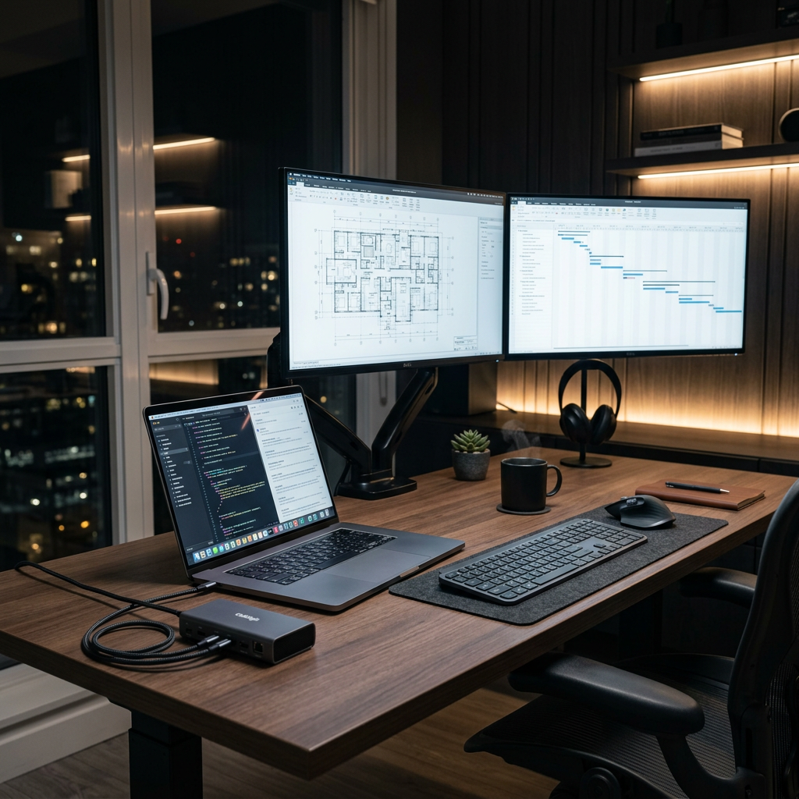
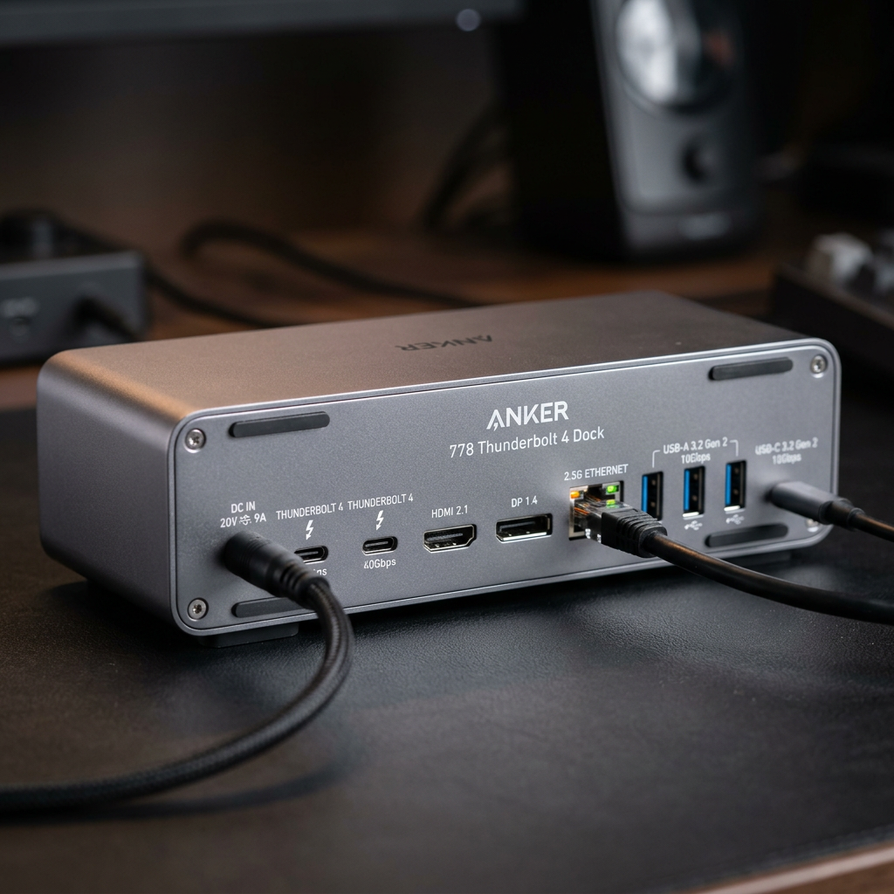

The Ultimate Anker Docking Station Guide: Transform Your Workspace into a Productivity Powerhouse
The 'Cable Chaos' Killing Your Productivity (and How to Fix It)
You sit down at your desk, ready to crush your to-do list. But first, you have to plug in your monitor. Then your mouse. Then your keyboard. Then your external drive. By the time you’ve hunted down your charging cable, you’ve already lost your flow. Modern laptops are thinner and faster than ever, but they’ve sacrificed the one thing professionals need most: connectivity.
An Anker docking station isn't just a hub; it’s the brain of your workstation. It turns a single port on your laptop into a command center, allowing you to connect multiple 4K displays, transfer data at blistering speeds, and keep your machine charged with a single cable. But with different protocols like Thunderbolt 4 and USB-C, choosing the wrong one can lead to flickering screens and slow data transfers.
To help you make the right investment, we have compared the two top-tier contenders in the Anker lineup.

| Product Name | Best For | Key Spec | Max Power | Verdict |
|---|---|---|---|---|
| Anker 778 Thunderbolt 4 Docking Station (12-in-1) | Power Users & Creatives | 40Gbps / 8K Support | 100W | The ultimate choice for speed and future-proofing. |
| Anker 575 USB-C Docking Station (13-in-1) | Daily Multi-Taskers | Triple Display Support | 85W | The best value for massive port expansion. |
Anker 778 Thunderbolt 4 Docking Station (12-in-1): The Apex of Performance
If you are a creative professional, a software engineer, or someone who refuses to compromise on speed, the Anker 778 Thunderbolt 4 Docking Station is your endgame. Built on the latest Thunderbolt 4 technology, this station offers a staggering 40Gbps bandwidth. This means you can move massive 4K video files in seconds, not minutes.
Why the Anker 778 Dominates:
- Future-Proof Speed: Thunderbolt 4 technology ensures maximum compatibility and the highest data rates available on the market today.
- Visual Brilliance: Supports a single 8K display at 30Hz or dual 4K displays at 60Hz, perfect for color-accurate video editing or immersive gaming.
- Massive Charging: With 100W upstream charging, even the most power-hungry 16-inch laptops stay topped up under heavy workloads.
- 12-in-1 Versatility: Includes 2x DisplayPort, 1x HDMI, 1x Thunderbolt 4 downstream port, and multiple USB-A/USB-C ports for all your peripherals.
The Anker 778 is designed for those who need their hardware to keep up with their brain. It eliminates the bottleneck between your laptop and your peripherals, ensuring a seamless, lag-free experience every single day.
Check Price on Official Store
Anker 575 USB-C Docking Station (13-in-1): The Ultimate Workstation Workhorse
Not everyone needs 40Gbps speeds, but everyone needs more ports. The Anker 575 USB-C Docking Station is the gold standard for office professionals and home-office setups that require a massive array of connections without the Thunderbolt price tag. It utilizes a robust USB-C 10Gbps connection to provide a stable, high-performance environment.
Why the Anker 575 is the Smart Choice:
- Triple Display Support: Boost your screen real estate by connecting up to three monitors simultaneously (on Windows), dramatically increasing your multitasking capabilities.
- Unbeatable Value: Offers 13 ports of connectivity, covering everything from SD card slots to Gigabit Ethernet and high-speed USB-A ports.
- Reliable Power: Delivers 85W of charging to your laptop, ensuring you never reach for your power brick again.
- Plug-and-Play Simplicity: Works seamlessly with a wide range of USB-C laptops, making it a versatile choice for households with multiple different devices.
The Anker 575 is about utility and efficiency. It’s the perfect solution for the user who wants a permanent, reliable desktop setup that handles everything from spreadsheets to Zoom calls with zero friction.
Check Price on Official StoreFinal Verdict: Which Anker Docking Station Should You Buy?
Choosing the right Anker docking station comes down to your specific workflow requirements. Both options offer industry-leading reliability and heat management, but they serve different masters.
Choose the Anker 778 Thunderbolt 4 if you have a Thunderbolt-enabled laptop (like a MacBook Pro or high-end XPS) and you require the absolute fastest data speeds or 8K resolution support. It is a premium investment for those who demand the best.
Choose the Anker 575 USB-C if you want to maximize your ports and screen real estate for a standard professional workflow. It is the king of versatility and provides the best "bang for your buck" for triple-monitor setups and general office use.
Stop fighting with your cables. Upgrade to an Anker docking station today and finally experience the productivity of a truly unified workspace.